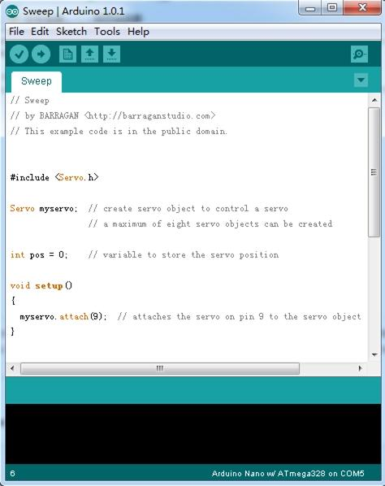

Grove - Servo is DC motor with gearing and feedback system. It is used in driving mechanism of robots. The module is a bonus product for Grove lovers. We regulated the three-wire servo into a Grove standard connector. You can plug and play it as a typical Grove module now, without jumper wires clutter.
But if you feel more like a proto servo, check out EMAX 9g ES08A High Sensitive Mini Servo. They are the same model, both of good quality and burden-free price.
Model:ROB08211P

| Item | Min | Typical | Max | Unit |
|---|---|---|---|---|
| Working Voltage | 4.8 | 5.0 | 6.0 | V |
| Torque | 1.5/1.8 | Kg.cm | ||
| Speed | 0.12/0.16 | s/60° | ||
| Size | 32X11.5X24 | mm | ||
| Weight | 8.5 | g | ||
The Servo has three wires: power, ground, and signal. The power wire is typically red, and should be connected to the 5V pin on the Arduino/Seeeduino board. The ground wire is typically black or brown and should be connected to a ground pin on the Arduino board. The signal pin is typically yellow, orange or white and should be connected to Digital 9 on the Arduino board.You can change to the digital port as you like. But don't forget to change the port number in the definition of the demo code at the same time.
Next sweeps the shaft of a servo back and forth across 180 degrees.This example makes use of the Arduino servo library.

If you have questions or other better design ideas, you can go to our forum or wish to discuss.